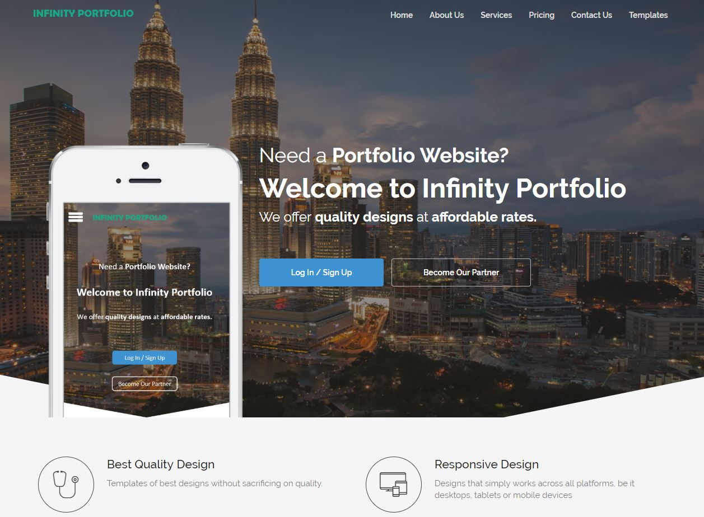
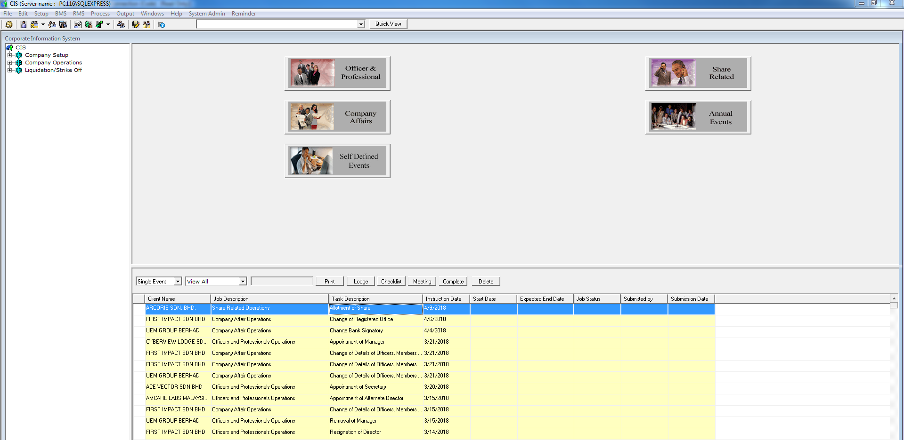
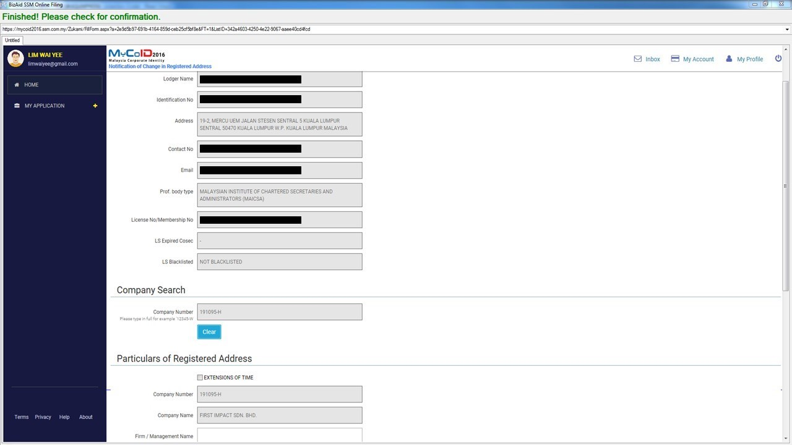
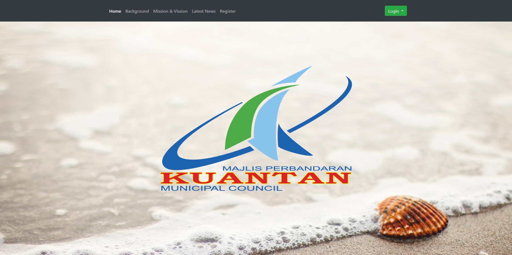
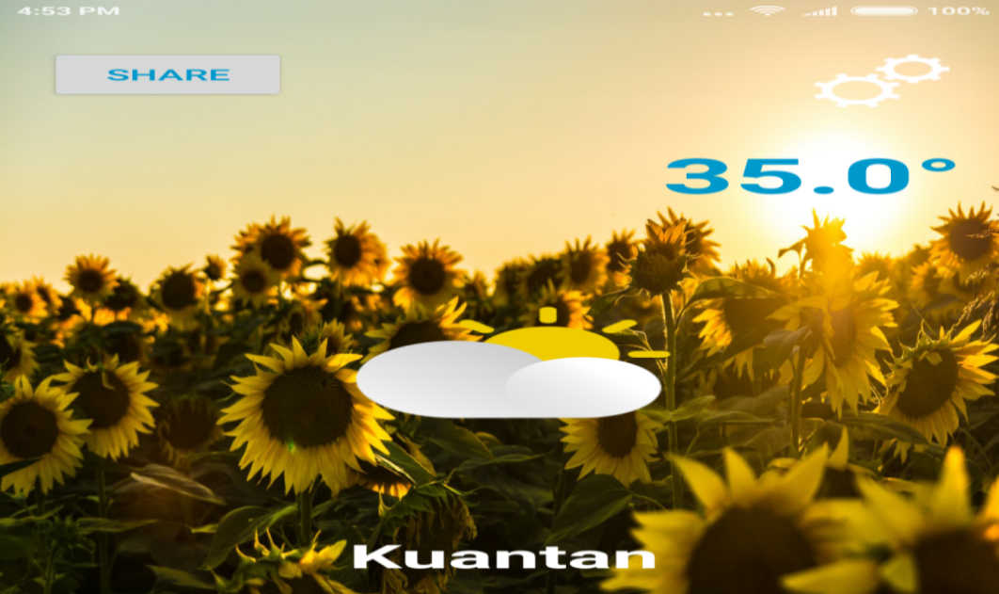
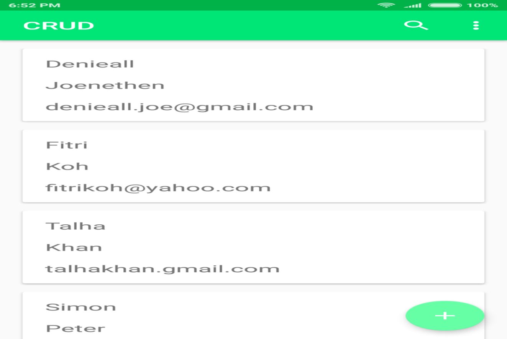

My Work
1. Infinity Portfolio

Infinity Portfolio provides portfolio websites for job seekers at a lower price.
I have built a custom system for this company that have portfolio website templates
for the clients to choose from and they can preview every templates with their own data after signing up.
I also built an API that intergrates with the system to populate the clients data in a dynamic html page. Finally,
I have also used a payment gateway api to collect payments using local online banking services and
domain name availability checker API for checking domain names that the client chooses.
I am also proud to say I have built this
system alone using php in less than two months.
Check it out at: www.infinityportfolio.com
2. CIS - Corporate Information System

CIS is a product of BizAid Technologies. This company was founded in April 2001 and specializes in providing integrated corporate secretarial solutions. This was also the company that I went for my internship. CIS offers features such as Entity Management, Document Management, and Paperless Board Meeting. CIS also handle all stages that a compnay will go through such as incorporation, operation and liquidation. My job was to handle installation for new clients remotely, fix bugs in CIS which was built in VB6, add new features and perform minor network troubleshooting and server monitoring tasks as well together with my team.
3. BizAid SSM Online Filling

During my time in BizAid, I have been given a special task to complete by myself. It is to build a single purpose web browser that collects data from CIS in MSSQL database, fill in the forms at SSM website automatically and let the company secretaries see the progress and finally submit the form after they are satisfied with the data. This browser was built using VB.NET and uses the shell command to get data from CIS which uses VB6 and then the automated filling process begins that was possible with iMacros .NET Component. I have completed this tasks successfully along with a small .NET app that lets you check the available company name for registration and the registration status without logging in to MyCoID as a bonus to the company.
My Projects
1. My Porfolio Site

I built this portfolio website without using any css frameworks such Bootstrap. I used SASS to style the pages, make my own grids and
used media query to handle the responsiveness of page. In addition, I have also used libraries such as particles.js to
create the particle effect on the homepage and animate on scroll to handle animations when scrolling the 'My Work' page.
Get the full code at: Github
2. Municipality Complaint & Compound Management System

This project was developed to serve as my final year project. It is a robust web-based app for public
to issue complaints and pay fine as well for staff to provide updates on the complaints received. I have used
Google Maps API to find a location and convert it into QR Code to make it easy for the enforcement officers to
find the complaint location, integrated Braintree Payment API for processing the compound payments and
used Google Charts API for reporting in the admin dashboard section.
Get the full report with screenshots: Here
3. Android Weather App

This application was built for retrieving the current weather using GPS to pinpoint the device's last known location.
This objective of this application is to grasp certain concepts such as:
Android Activity Lifecycle, callbacks,
Constraint Layout,
Intent,
Threading,
Service,
Intent Service,
Foreground Service,
BroadcastReceivers,
Notification,
Location,
GET request,
Handling OutOfMemoryError,
and JSON manipulation.
View More on: Github
4. Project CRUD

This application was built with the sole purpose of incorporating a database in the app using Android Room.
This objective of this application is to practice on concepts such as
Android Room,
Result Receivers,
Card View,
Threading,
Intent Service,
Adapters,
Action Bar,
Search in recycler view,
Recycler View menu items,
Floating action button,
Alert Dialog
View More on: Github